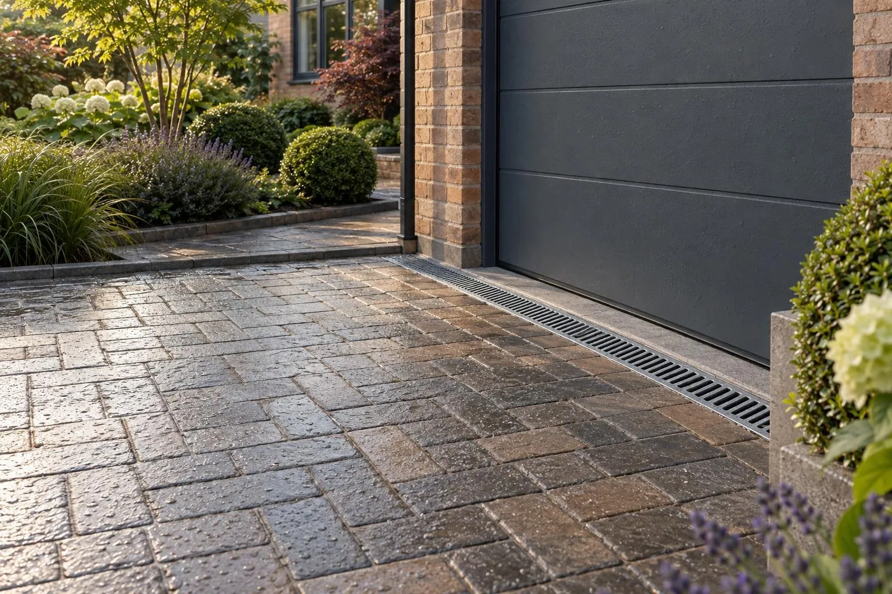

Drainage and SuDS
The least interesting page on this website and the one that decides whether your drive is still flat in five years.
Since 2008, paving over more than 5m² of front garden with a non-permeable surface that drains onto the road needs planning permission. A permeable surface, or water directed to a soakaway, border or lawn on your own land, generally does not — and on Milton Keynes clay the drainage has to be designed, not assumed.
- Planning rule
- Permeable, or drains to your own land
- Soakaways
- Need ground that absorbs water
- Foul sewer
- Never permitted
Where is the water going?
Since 2008, if you pave over a front garden with an impermeable surface and let the water run onto the road, you need planning permission. If the surface is permeable, or if the water is directed to a soakaway, a border or a lawn on your own land, you generally do not.
That is the whole of it. Everything else is detail about how you achieve it. What matters is that somebody actually thinks about it before the stone goes in, because retrofitting drainage into a finished driveway is an expensive and destructive job.
On a lot of Milton Keynes estates the ground is clay and the water does not go anywhere quickly, which is exactly when this needs designing rather than guessing.
Five ways we deal with water
A fully permeable build-up
Permeable surface over open-graded stone. The whole driveway becomes the drainage system and there is nothing to block or maintain. Our default where the ground allows.
Soakaway
A stone-filled or crated void sized to hold a storm and let it out slowly. Needs a percolation test to size properly, and needs to be the right distance from foundations.
Channel drain
A linear drain across the threshold or at the low point, connected to a soakaway or a surface water connection. Simple, effective, needs occasional clearing.
Falls to a border
The cheapest answer where it works. Lay the drive falling away from the house into a planted border and let the ground take it.
Check baffles on a slope
On a long fall, dams within the sub-base hold water back in stages so it soaks in rather than sheeting to the bottom. Cheap to build in, impossible to add later.
Connection to surface water
Where a legitimate surface water sewer or existing connection exists, it may be the right answer — but never a foul drain, and never a neighbour's.
Design, not hope
Where drainage is critical we will dig a trial hole and run a percolation test rather than assume. It costs a morning and it is the difference between a soakaway that works and one that fills up in November and never empties.
The result goes into your proposal as a written drainage note, with the build-up drawn as a section. If it turns out your ground is free-draining sand and gravel, we will say so and save you the money on storage you do not need.
- Trial hole and percolation testing where the design depends on it
- Soakaways sized against the storm event, not by eye
- Kept the required distance from foundations and boundaries
- Levels set so water never runs towards the house
- Existing gullies and chambers surveyed before we design anything
Things people ask us
Do I need planning permission for my new driveway?
What is a driveway soakaway and where can it go?
My driveway floods now. Will a new driveway fix it?
Can I drain my driveway into the foul sewer?
What are the options for draining a driveway?
How far does a soakaway need to be from a house?
What is a percolation test and why does my driveway need one?
Where should a channel drain go on a driveway?
Can I connect my driveway drainage to the surface water sewer?
Do soakaways work on clay soil?
Which way should a driveway fall, and how steep should the fall be?
What driveway drainage costs
A channel drain across a typical driveway or garage entrance costs about £1,000–£1,800 installed, or £120–£200 per metre for a heavy-duty, vehicle-rated channel. Soakaways are sized and priced after a percolation test.
Drainage work on your own driveway does not need planning permission, but surface water must not go into the foul sewer or onto the road, and any new connection to a public sewer needs the water company's approval. Planning Portal: paving your front garden
Guide prices from 2026 online price guides, at the higher end. Your fixed price comes in writing after the free design visit.
Driveway drainage near you
Local advice on ground, planning and prices for each town we cover.
- Driveway drainage in Milton Keynes
- Driveway drainage in Bletchley
- Driveway drainage in Wolverton
- Driveway drainage in Stony Stratford
- Driveway drainage in Newport Pagnell
- Driveway drainage in Woburn Sands
- Driveway drainage in Bow Brickhill
- Driveway drainage in Aspley Guise
- Driveway drainage in Cranfield
- Driveway drainage in Woburn
- Driveway drainage in Hanslope
- Driveway drainage in Olney
- Driveway drainage in Leighton Buzzard
- Driveway drainage in Winslow
- Driveway drainage in Towcester
- Driveway drainage in Ampthill
What driveway drainage cost
Our driveway drainage cost guide breaks the price down: what is included, what changes it and what to check in any quote.
Not sure where your water goes?
Neither are most people. It takes about twenty minutes on site to work out, and it is free.